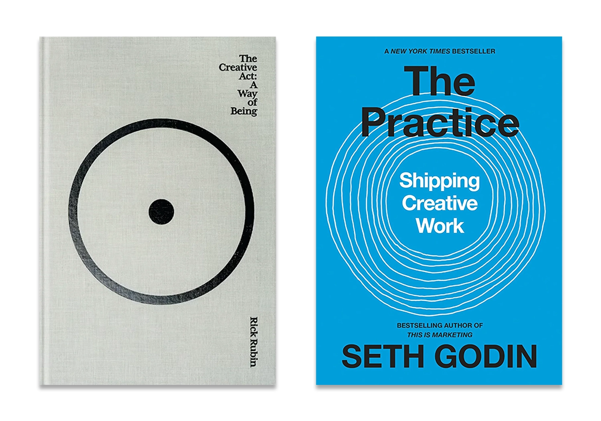

It Doesn’t Count if You Don’t Share it
In my previous post, I talked about my bad habit of not finishing self-initiated projects. A frustrating side-effect of this is that I will inevitably see another person executing a very similar idea, sharing it publicly and receiving positive feedback. Now it feels like I’ve missed my window and ever launching it would seem derivative. These are usually illustrations or art projects which are very close to something I have been working on for a long time but never felt like it was ready to share.
I recently came across a passage that helped me realize that I have only myself to blame for feeling upset when this happens.
In his book The Creative Act: A Way of Being, music producer Rick Rubin shares what I find to be a beautiful perspective on ideas. I think of his view as seeing ideas almost like independent entities floating in the universe, waiting to be found and brought to life.
“If you have an idea you’re excited about and you don’t bring it to life, it’s not uncommon for the idea to find its voice through another maker. This isn’t because the other artist stole your idea, but because the idea’s time has come.”
Author and marketer Seth Godin states it less poetically in his book The Practice: Shipping Creative Work and cuts straight to the point when explaining the importance of shipping your idea or product out into the world.
“Shipping, because it doesn’t count if you don’t share it.”
Of course that’s not to say that we can’t make things purely for ourselves, which definitely counts in its own way. But if we want feedback and a relationship with others through our work, it will only happen if we actually put it out there.
I’ve decided to try and share things in a state where they might not yet feel ‘perfect’ (whatever that means), rather than waiting too long and losing the moment. It might not ever be a masterpiece, but at least it now counts. 
Tags: thoughts